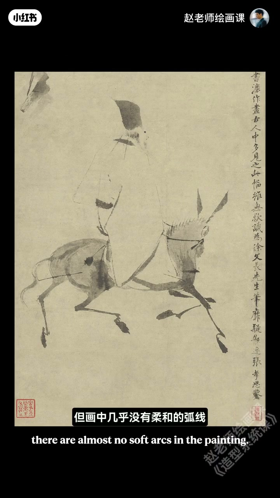
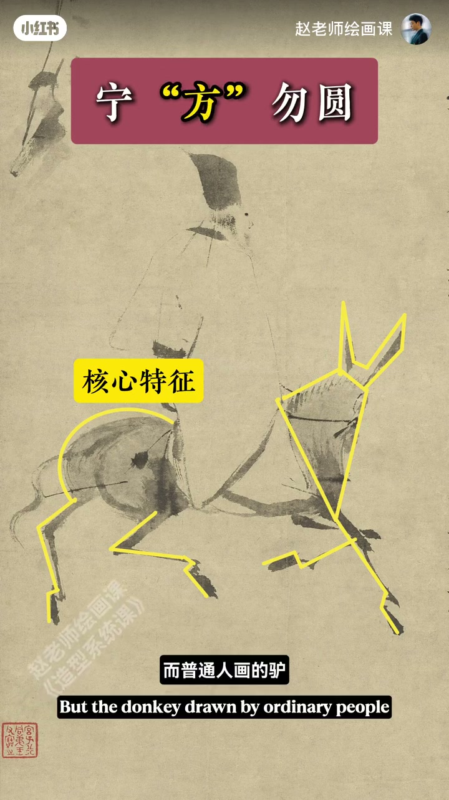
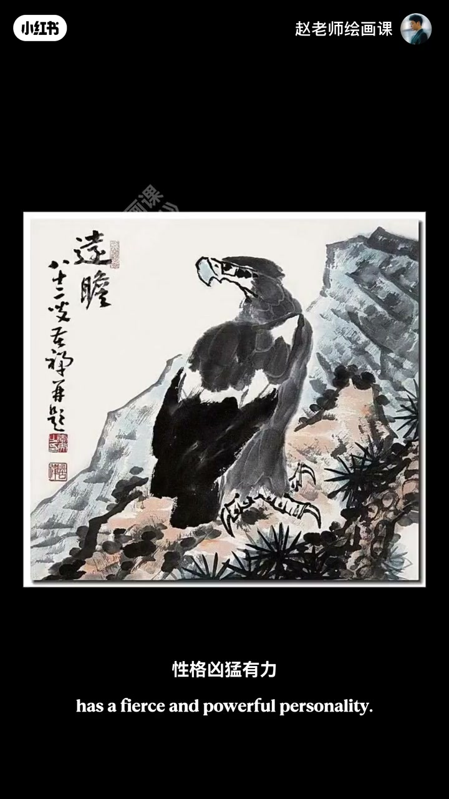
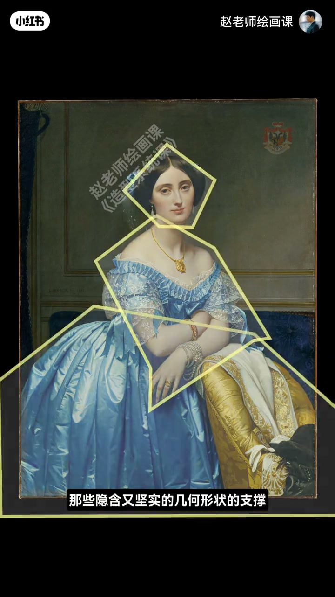

内容要点
细节塑造充分却远看整体发软，大师寥寥几笔却硬朗传神——答案四个字：宁方勿圆。徐渭《驴背吟诗图》几乎没有柔和弧线，全由方折笔墨塑造；紧紧抓住挺立耳、前倾颈、翘臀、细劲四蹄等核心特征，这叫方。普通人迷在琐碎细节里，形体软圆缺特征就失去艺术感。螃蟹、李苦禅鹰同理：高度提炼夸张外形特征并舍繁琐；爱好者细节细但特征不够，叫画得太圆。列宾明确有力的方形轮廓定性格情绪；安格尔柔美人物下仍有坚实几何支撑。成功角色设计剪影可辨。下期几何形归纳法。
知识结构
方折笔墨；抓耳颈臀蹄特征并强化。
提炼夸张核心外形；过圆＝特征不足。
列宾／安格尔；剪影可辨；几何形预告。
宁方勿圆＝敏锐抓住对象特征并大胆强化，而不是到处画棱角；太圆往往是特征被细节稀释了。
00:00-01:19徐渭的驴：方＝强化特征
细节充分却远看发软，大师寥寥却硬朗传神。徐渭《驴背吟诗图》几乎没有柔和弧线，全由方折笔墨塑造；对比现实中的驴，他紧紧抓住挺立的耳朵、前倾的脖颈、翘起的臀部、细劲的四蹄——这其实就叫方。
普通人往往迷失在琐碎细节里，形体软圆缺乏特征性，失去艺术感。宁方勿圆是要我们敏锐抓住对象特征并大胆强化——造型艺术最核心的底层思维之一。00:40／01:00。


01:19-01:58螃蟹与鹰：提炼与夸张
徐渭的螃蟹生动传神又充满张力：高度提炼并强化最核心外形特征，同时舍弃毫无意义的繁琐细节。李苦禅笔下鹰性格凶猛有力，来自对喙、腿、爪子与身形等形状特征的高度提炼与夸张。
对照普通爱好者：细节很仔细，但特征不够强化，所以叫画得太圆。01:40。

01:58-02:53西画、角色设计与下期预告
西方同样讲究宁方勿圆：列宾素描中人物性格与情绪正是明确有力的方形轮廓起了大作用；安格尔光滑柔美人物也离不开轮廓中隐含又坚实的几何形状支撑。
现代插画与角色设计：普通设计细节堆砌却轮廓模糊；成功设计哪怕只给你一个剪影也能一眼认出。下期教终极练习——几何形归纳法。02:20。

完整转录（61段）
以下文本由 Whisper medium 模型自动转录，可能存在少量识别误差，已尽可能修正。
为什么细节塑造充分
但远看整体发软
而大师寥寥几笔
却硬朗又传神
答案就四个字
宁方无缘
那什么叫宁方无缘呢
老规矩
我们来看画
这是明代国画大师徐魏的《驴背吟诗图》
好看吧
那画中几乎没有柔和的弧线
全由这种方折的笔墨来塑造
这笔现实中的驴我们不难发现
徐魏紧紧地抓住了驴挺立的耳朵
前倾的脖颈
翘起的臀部
细劲的四蹄这些核心特征
这其实就叫方
而普通人画的驴往往迷失在所在的细节里
导致形体软圆缺乏特征性
就会失去艺术感
所以宁方无缘
是要我们敏锐地抓住对象的特征
并大胆地强化的
这是造型艺术最核心的底层思维之一
再看他画的螃蟹
生动传神又充满张力
一对比啊
我们就知道
他高度提炼并强化了螃蟹的最核心的这些外形特征
同时啊
肯定也舍弃了一些毫无意义的繁琐的细节
李苦禅笔下的鹰性格凶猛有力
这来自于艺术家对鹰的会
腿
爪子
还有身形等这些形状特征的高度提炼与夸张表现
对比一下普通爱好者画的
虽然细节很仔细
但特征不够强化
所以叫画得太圆
西方绘画中一样非常讲究宁方无缘
在列宾的这些素描中
人物的性格与情绪正是这些明确而有力的方形轮廓起了大作用
即使是安格尔笔下这些光滑柔美的人物
也离不开轮廓中那些隐含又坚实的几何形状的支撑
现代插画与角色设计中
普通的设计细节堆砌却轮廓模糊
而成功的设计
哪怕只给你一个剪影
你也能一眼认出来
好了
那我们该如何掌握这种宁方无缘的核心能力呢
别担心
下一期我将教给大家一个终极的练习方法
叫几何形归纳法
敬请期待哦
下期见哦
拜拜
拜拜